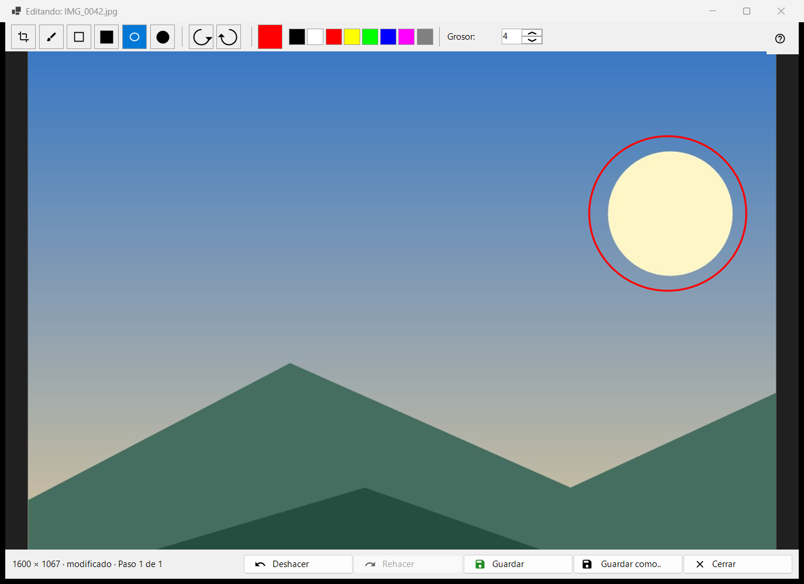
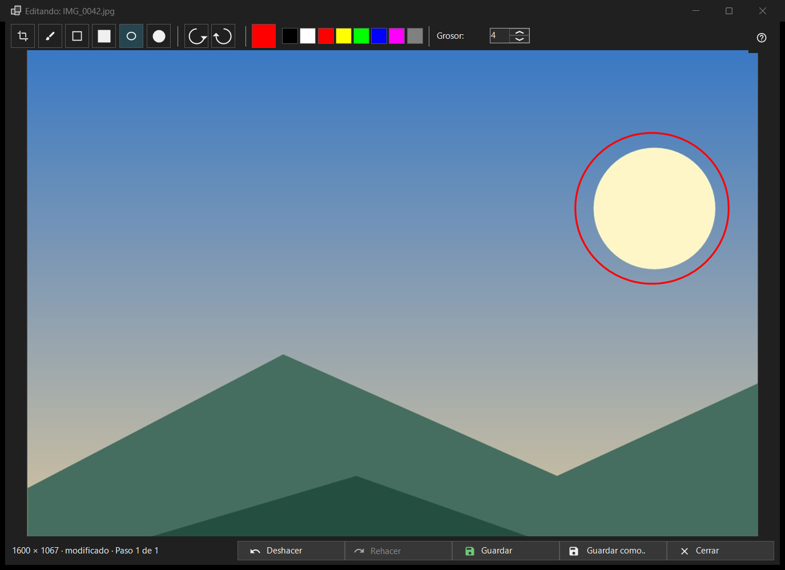

Editar imagen
Para qué sirve
Un pequeño editor para una sola imagen fija: dibujar formas, recortar, girar y voltear, y luego guardar sobre el original o como archivo nuevo. Se abre, con el nombre de archivo de la imagen en el título, desde el botón Editar de la barra de herramientas o el primer elemento del menú de la imagen, y solo para una imagen fija (no para una animación). El editor vuelve a leer el archivo y trabaja con su propia copia.


En este orden
- Pulse Editar en el visor.
- Elija una herramienta, un color y un grosor.
- Dibuje sobre la imagen, o recórtela, gírela o voltéela; Deshacer retrocede un paso.
- Pulse Guardar para escribir sobre el original, o Guardar como.. para un archivo nuevo.
- Cierre la ventana; si hay cambios sin guardar, responda a la pregunta.
Los elementos
Herramientas
En la tira: Recortar, Pincel, Rectángulo, Rectángulo relleno, Óvalo y Óvalo relleno. Las teclas son C, B, R y O (las de relleno no tienen). Mantenga pulsada Shift al dibujar un rectángulo o un óvalo para obtener un cuadrado o un círculo. Al pasar el cursor sobre una herramienta se muestran su nombre y su tecla.
Color y grosor
El botón de color abre el cuadro de colores, y a su lado hay ocho muestras rápidas (negro, blanco, rojo, amarillo, lima, azul, magenta, gris). El grosor va de 1 a 64 píxeles de la imagen (4 por defecto); las teclas [ y ] lo cambian de uno en uno. El color y el grosor son comunes a todas las herramientas.
Recortar
Con la herramienta Recortar, arrastre un marco sobre la imagen. El botón Aplicar recorte aparece solo mientras existe un marco. Enter hace lo mismo; Esc quita el marco sin recortar. La imagen se corta solo cuando aplica el recorte.
Girar y voltear
Girar a la izquierda (Ctrl+[) y Girar a la derecha (Ctrl+]) giran los píxeles. Las teclas H y V voltean la imagen horizontal y verticalmente. Esto cambia la propia imagen, a diferencia de R en el visor, que solo gira la visualización.
Deshacer y Rehacer
Deshacer (Ctrl+Z) y Rehacer (Ctrl+Y o Ctrl+Shift+Z) recorren un historial de hasta 20 pasos dentro de un límite de memoria. La línea de estado muestra el tamaño y, tras un cambio, modificado con Paso N de M; cuando el límite descarta los pasos más antiguos dice Se descartaron los pasos antiguos: límite de memoria.
Guardar
Guardar (Ctrl+S) escribe sobre el original y solo se activa tras un cambio; antes, su indicación dice Nada que guardar: la imagen no se ha modificado. Para un JPEG se le pregunta una vez por sesión: El JPEG se volverá a comprimir - es irreversible. La fecha de captura y el resto de los datos EXIF se conservan. El archivo se escribe con un nombre temporal y se intercambia; si falla el guardado, la ventana sigue abierta con el motivo.
Guardar como..
Abre un cuadro de archivo con el nombre seguido de (editada). Los formatos son PNG, JPEG, BMP, TIFF y WebP; una imagen en cualquier otro formato se ofrece como PNG. Se rechaza la carpeta temporal de un archivo comprimido. Tras guardar sobre el original, el visor lo recarga; un archivo nuevo en la misma carpeta se abre; uno que esté en otro lugar se nombra en la línea de estado.
Cuando Guardar está desactivado
La línea de estado dice No se puede sobrescribir el original, con el motivo: este formato no se escribe, el archivo es de solo lectura, no hay permisos de escritura, otro programa está usando el archivo, el archivo tiene varias páginas o fotogramas (solo se edita el primero), está dentro de un archivo comprimido o no existe. Guardar como.. sigue disponible.
Cierre
Cerrar o Esc cierra la ventana; Esc primero cancela un trazo en curso y después quita el marco de recorte. Con cambios sin guardar la pregunta dice: Los cambios no están guardados - ¿Cerrar el editor y perder los cambios no guardados? Guardar guarda primero, No guardar descarta, Cancelar (la respuesta predeterminada, también Esc) permanece en el editor. Esta pregunta se hace incluso cuando las confirmaciones están desactivadas.